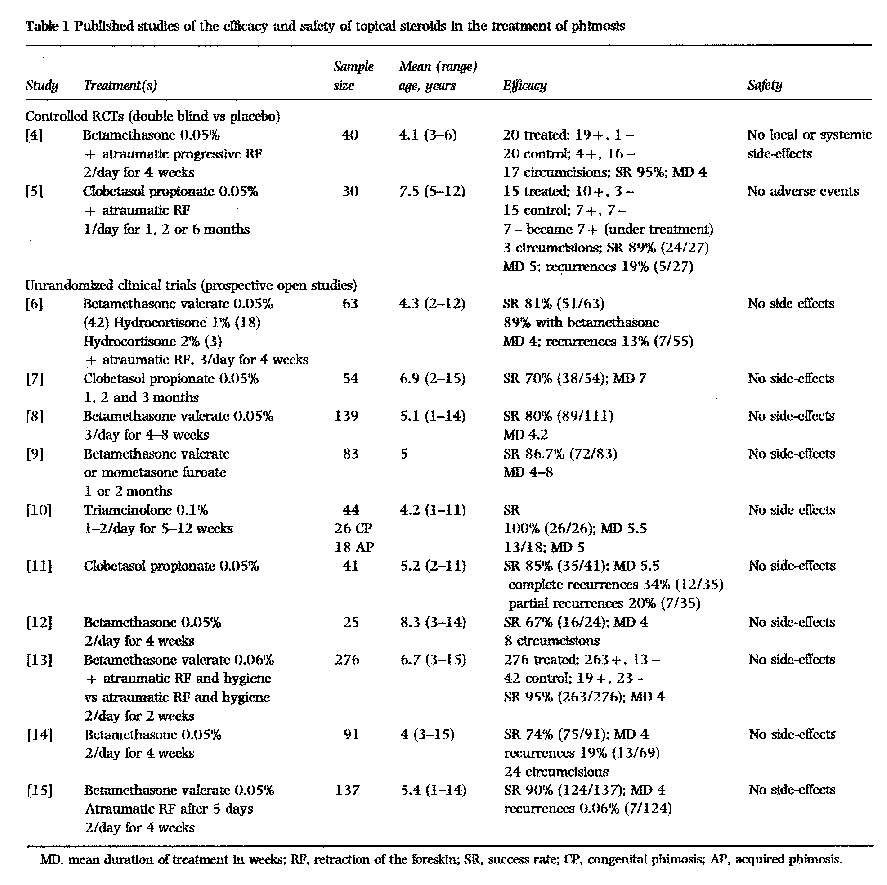
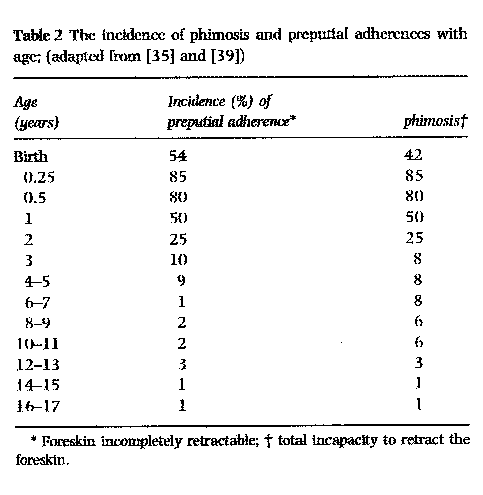

THE CIRCUMCISION REFERENCE LIBRARY
Objective To compare the cost-effectiveness of surgery and topical steroids as treatments for phimosis (defined as a clinically verifiable, pathological, cicatricial stenosis of the prepuce) and to evaluate the financial basis of these treatments.
Methods Data on treatment using topical steroids was obtained from published reports and those for circumcision from claims by private hospitals for children <13 years old registered at the health insurance department of our facility. The estimate of the French national financial cost of the treatments for 1998 was calculated from public and private institutional information.
Results Treatment with topical steroids for 4–8 weeks was successful in ~85% of patients (mean age 5 years) and had no side-effects; the remaining 15% were treated by circumcision. Topical steroid therapy costs (in French francs) F 360 per patient. For those primarily treated by circumcision (81 boys, mean age 4.3 years) and diagnosed as having phimosis, the cost was F 3330 per patient in the private sector. The total number of circumcisions performed in France, regardless of sector (public or private) for 1998 was estimated to be 51 080, which represents an annual cost of F 195.7 million.
Conclusion As topical pharmacological treatment avoids the disadvantages, trauma and potential complications of penile surgery, including anaesthesia-related risks, the use of topical steroids as a primary treatment appears to be justified in boys with clinically verifiable phimosis. This treatment could reduce costs by 75%, which represents a potential annual saving of ~F 150 million.
Keywords phimosis, topical steroids, circumcision, benefit/risk ratio, cost-effectiveness
Introduction
Phimosis consists of a pathological, cicatricial stricture of the foreskin that prevents it from being retracted to uncover the glans [1]. The affected foreskin has easily identifiable indurated white plaques or scar tissue at the preputial orifice that prevent its eversion. This is commonly a side-effect of lichen sclerosis et atrophicus, nonspecific chronic inflammatory processes, forcible premature retraction, or repeated infections that cause scarring and stricture of the foreskin [2].
There is still much confusion over the definition of phimosis and therefore over the indications for intervention. At birth, the penis, like the rest of the body, remains premature. In the juvenile penis, developmental balanopreputial adherence, resistance of the preputial orifice to premature retraction, and the generous length of the prepuce are normal, physiological conditions. As such, they should not be designated as phimosis. The universality of these conditions suggests that they may serve useful functions. With or without balanopreputial adherence, physiological and developmental resistance to premature preputial retraction to various degrees (often unscientifically and unjustifiably called a 'tight' foreskin) is normal for boys from birth and resolves naturally over time. This process of penile development from less to more retractability can take almost two decades [3]. No intervention is indicated and any attempts to hasten this natural process of development should be strongly discouraged.
For genuine phimosis, as defined above, three treatment options are available, i.e. surgical amputation of the prepuce, topical pharmacological treatment, or no treatment. Because there are no studies examining the efficacy, benefit/risk value or cost-effectiveness of the last option, it is ignored for the purposes of this comparative study.
At present, the most common treatment for genuine phimosis usually consists of the partial or total surgical resection of the prepuce, most often under general anaesthesia. However, in the past few years treatment by topical steroids (clobetasol or betamethasone 0.05%, applied locally) has been used as an alternative to circumcision [4-15]. This pharmacological approach is rarely used in France, no doubt because the diffusion of information among paediatricians and GPs is poor. To evaluate as objectively as possible the potential of this new method of treating phimosis in risk/benefit terms, we systematically reviewed the available relevant publications. The medical community is required to improve its practices to ensure that patients receive treatment with the best benefit/risk value, and to use public health-care resources responsibly. Consequently, we also compared the two therapeutic approaches (surgery vs topical steroids) for their cost-effectiveness. Finally, we evaluated the magnitude of any potential savings from the national and regional database of the Programme de Médicalisation des Systèmes d'Information (PMSI) or French Diagnostic Related Groups (DRG) database in 1998.
Methods
Surgery was compared with pharmacological treatment for genuine phimosis both as the cost (measured in French francs) of the resources needed for the treatment and as the effectiveness (measured in terms of success) of each strategy. Data on medical management were gathered from a review of the literature, based on a systematic search of Medline to September 2000. We used the terms phimosis, circumcision, phimosis-drug-therapy and glucocorticoids. Data relative to the surgical treatment were obtained by selecting all interventions corresponding to circumcision performed between 1 January 1996 and 31 December 1998 in the private sector, on patients aged ≤12 years and benefiting from the Provence department dealing with health insurance. Only those circumcisions confirmed by the surgeon to be for phimosis were included in the study.
Costs were computed from the viewpoint of the payer (national health insurance), over the total duration of the treatment. When the medical management was considered, the total duration of treatment was the time from the beginning of treatment to either certainty of cure or surgery. When the surgical treatment was considered, only the surgical admission was included. The volume of resources used (clinic visits, tests and drugs) was estimated from published data for patients treated medically. This is because pharmacological treatment for phimosis is presently seldom used in France, and the national health insurance database does not allow the identification of diagnoses and treatment patterns in outpatients. Medical resources were costed using the national reimbursement schedule. The costs of surgery were obtained directly from claims data.
The calculation of cost considered only the costs directly engendered by the surgical intervention (hospital stay, surgeon's and anaesthesiologist's fees, eventual supplementary medical examinations), or the cost reconstituted from the medical literature on the medicinal strategy (cost of medication and doctor's fees for two consultations with a specialist). The estimate of the total national expenditure in 1998 solely for circumcision (children <12 years old) was created using the public and private national database. All medical admissions corresponding to a circumcision, regardless of the type of stay (full or outpatient) were selected.
Results
After a computerized and manual bibliographic search, 12 articles were obtained (all published in journals indexed in the Medline database), allowing an evaluation of the effectiveness and tolerance of topical steroid treatment. Among these there were two controlled randomized clinical trials (RCTs) and 10 unrandomized studies, comprising a total of 1023 children and adolescents aged 1-15 years. The principal topical corticosteroids evaluated were betamethasone valerate 0.05% and clobetasol propionate 0.05%. Some studies recommended atraumatic retraction of the foreskin in association with the application of the drug.
A 4-8 week treatment of phimosis by topical steroids was effective in ~85% of patients (range 70-100%) and for a mean age at inclusion of 5 years. No adverse effects, either local or general, were reported. There was a 17% recurrence (partial or total) rate among the group treated successfully by a regimen ending after only 4 weeks. These recurrences generally responded favourably to a second 1-month course of treatment, at the end of which the success was definitive. The mean 15% failure rate of the pharmacological approach can be attributed to clinically verifiable cases of lichen sclerosis et atrophicus or nonspecific chronic inflammatory processes.
|
 |
Although it may appear that the radical surgical approach would be the most effective option in almost all cases, circumcision can lead to a recurrence of phimosis, caused particularly by retracted scars or incomplete circumcision [16]. The rate of these recurrences was 2% [17] but this could be an underestimate, for the values were generated in specialized centres, whereas in general practice it is common that circumcisions are carried out by young, inexperienced surgeons [18] whose rate of complications is likely to be higher, although they are unreported.
Circumcision can also be followed by more serious complications. From published studies, there is significant morbidity associated with postoperative bleeding in 1-7% of patients [19,20], infection, local or systemic in 4-8.5% [17,21,22], meatitis and meatal ulceration in 8-31% [23] and meatal stenosis in 8-11% [24,25]. Some complications, fortunately rarer, have been described, e.g. urethral fistula, amputation of the glans penis, amputation of the entire penis, electrocautery destruction of the penis, ischaemia, penile necrosis, and even deaths linked to systemic infection [26,27]. In a retrospective study from Sweden of children aged < 12 years and who had undergone circumcision for phimosis, Heinius et al.[28] reported 34% with problems occurring in the first week after surgery, of which a third required hospitalization. Haemorrhaging required renewed surgical intervention in 6% of patients [29]. In an English study conducted on 140 children (mean age 4.3 years), the overall readmission rate was 5.6%, of which half were for persistent bleeding, vomiting and acute retention of urine, and the other half for meatal stenosis requiring a meatotomy [17]. Moreover, there are also risks of complications inherent with local or general anaesthesia [30], and the traumatic psychological aspects of such intervention in children [31]. Furthermore, because the movable foreskin plays an important role in the mechanical stimulation of the underlying penile structures, and because it is the most richly endowed part of the penis by specialized erogenous and tactile nerve structures, circumcision unavoidably results in a permanent reduction of erogenous sensitivity and responsiveness [32,33]. The permanent externalization of the glans penis consequent to preputial amputation may also lead to desensitization of that structure. The nerve endings that lie just beneath the thin mucosal surface of the normal penis become progressively buried as the surface of the externalized glans undergoes keratinization [34]. As such, circumcision is the least desirable option for the treatment of genuine phimosis.
Evaluation of the cost of medical and surgical strategies
The mean cost of the medical treatment of phimosis was set at F 360 per patient. In practice, this is a direct medical expense; this cost includes the price of the medication (F 60 for 20 g of betamethasone or clobetasol 0.05% in cream or ointment) and the fees corresponding to two consultations with a specialist (urologist or paediatrician) before and after treatment (F 300).
The study of 81 claims (mean age of the patients, 4.3 years) for a circumcision for phimosis (verified by the operating report) yield a mean (SD) cost per patient of F 3330 (816) in private establishments. The cost of the medical stay, which is a direct cost, can be broken down into the price of the hospital stay, at F 2105 (562), fees, at F 1125 (307) and pharmacy, at F 100. This calculation did not include expenses attributable to eventual complications or recurrences. Furthermore, 27% of circumcisions were associated with frenuloplasty, which resulted in a slight increase in the total cost of the circumcision (+ 9.7%), and that 82% of circumcisions were performed under general anaesthesia. On the basis of an effectiveness rate of 85% for the medical treatment (at 8 weeks) and of 100% for the surgical treatment, the savings brought about by the systematic use of the medicinal treatment would be 75%.
In 1998, 3671 admissions for circumcision in those <13 years old were recorded in our information system in the Provence Alpes Côte d'Azur (PACA) region, i.e. 1550 in public hospitals and 2121 in private clinics; 9.2% of these medical stays were full hospitalizations (>24 h) and the rest were outpatients. In the whole of France, 31 197 admissions uniquely for circumcision in the private sector were recorded for 1998. As for the public establishments, we only have access to the PMSI data for the PACA region. By postulating that there is no significant difference between the PACA population and the general population (the PACA region represents 7.67% of the population of France), the number of hospital stays for circumcision in the public hospitals was estimated to be 19 883. On the basis of an annual total of 51 080 circumcisions, the total cost of these medical stays is estimated to be F 195.7 million. The mean cost of a medical stay, regardless of the type of reimbursement, is therefore F 3831 (F 4885 in the public sector and F 3159 in the private sector).
Discussion
The proper use of resources requires an evaluation of the effects and costs of any medical action. This is particularly true for phimosis, where the treatment has typically relied almost exclusively on circumcision. This radical approach may be among the therapeutic options in those cases of pathological cicatricial preputial stenosis subsequent to lichen sclerosus et atrophicus that have resisted all other means of conservative treatment, but it is unjustified as a 'treatment' for developmental balanopreputial adherence and physiological resistance to premature retraction. The incidence of these physiological stages of penile development is reportedly 4-10% [35]. Indeed, almost all boys at birth have a prepuce that is adhered to the glans. In general, preputial adherence and resistance to premature retraction disappears over time, a process that can take almost two decades in some cases (Table 2).

The legitimacy of the surgical approach as a primary treatment for genuine phimosis has recently been called into question by the publication of several clinical studies on the effectiveness of treating phimosis with topical steroids. The synthesis of these studies shows clearly that the topical steroids used are very effective (a mean of 80% success after 4 weeks of treatment and 90% after 8 weeks) while being tolerated very well by young children (mean age 5 years). All of these studies included phimosis but only some of them included a subgroup analysis of the degree of severity before treatment [6,9,15] or by age at the time of inclusion [7,10,12,15]. As the degrees of severity varied depending on the study, any attempt at synthesis a posteriori would be doubtful and subject to criticism. However, the age of the patient does not seem to be a prognostic factor in the success of topical steroid treatment. The co-operation of the parents was not specifically studied, which is regrettable considering their important role in compliance with treatment. Similarly it is regrettable that the results of these studies were not analysed by 'intention to treat', as those children not complying (or more often their parents) were excluded from the study. However, these faults in methodology are of no consequence to the validity of the results or to the conclusions that can be drawn, because the follow-up rate is high and the difference in those responding or not to topical steroid treatment is large.
Furthermore, topical steroids, independent of their direct effect, seem to facilitate the atraumatic retraction of the foreskin by the lubricant contained in the product, as testified by one of the two RCTs [4], and by a third unpublished controlled study [6], which confirms the superiority of topical steroids over placebo. The mechanism of action of the topical steroid remains largely unknown. They could have an effect on the metabolism of arachidonic acid, a precursor to the mediators of skin inflammation, the prostanoids and the leukotrienes [36]. This anti- inflammatory effect is supported by a controlled RCT showing the specific effect on phimosis of a NSAID (diclofenac) topically administered as a lotion [37]. Topical steroids can also have a direct effect on skin as they are capable of inhibiting the synthesis of hyaluronic acid by fibroblasts, and they have an antiproliferative effect on the epidermis [38].
The benefit/risk ratio for topical steroids, as estimated from published reports, contrasts with that of circumcision. The frequency of complications from circumcision (2-10%) [26], their diversity and especially their potential seriousness, reduce the benefit/risk ratio compared with drugs, notably as a primary treatment. If only from the ethical perspective, it is no longer valid to consider treating phimosis by circumcision without having first attempted a minimum 4-week treatment with topical steroid, renewable if ineffective or for recurrence. If the such treatment is ineffective for confounding factors, e.g. clinically verifiable diseases such as lichen sclerosus et atrophicus, then medically justified, case-specific therapeutic circumcision is legitimate. This new approach is supported by the results of the present economic analysis.
If the cost of treating phimosis by topical steroids is estimated as F 360, the savings gained by the systematic use of such agents as a primary treatment would be 75%, considering those cases resistant to drug treatment. When applied to a financial basis of F 195.7 million, this translates to savings of at least F 147 million annually. The estimate of F 195.7 million is conservative, primarily because it does not include some medical stays deemed 'complicated' by other treatments. Additionally, circumcisions performed in some private offices were not included in the calculation. Most importantly, this estimate excludes the supplementary costs associated with the complications of circumcision.
Topical steroids are a real advance in the treatment of phimosis; this approach, which is supported by many studies, should induce medical decision-makers and practitioners to establish the local application of topical steroids as the standard practice for treating genuine phimosis. We conclude that circumcision cannot be justified, as it is in neither the patient's nor society's interest, and is incompatible with current standards of safety, ethics, effectiveness and rational spending.
Acknowledgements
This work was supported by grants from Caisse Maladie Régionale de Provence (Regional Health Insurance). The authors acknowledge Mr Karim Boukerdenna, executive director of the CMR de Provence, for his constant support during this investigation, Dr Frederick M. Hodges and Dr Isabelle Durand-Zaleski for their critical review of this article. Conflict of interest: none
References
Authors
D. Berdeu, MD, PhD, Pharmacologist.
L. Sauze, MD, Public Health consultant.
P. Ha-Vinh, MD, Public Health consultant.
C. Blum-Boisgard, MD, Paediatrician.
Correspondence: D. Berdeu, 19 rue du Trident, 34920 Le
Crès, France.
e-mail: dberdeu@excite.fr
http://www.cirp.org/library/treatment/phimosis/berdeu1/